Birth Order Effects
Helper
source("0_helpers.R")## Warning: package 'rmarkdown' was built under R version 3.4.3## Warning: package 'knitr' was built under R version 3.4.3##
## Attaching package: 'formr'## The following object is masked from 'package:rmarkdown':
##
## word_document## Warning: package 'lubridate' was built under R version 3.4.3##
## Attaching package: 'lubridate'## The following object is masked from 'package:base':
##
## date## Warning: package 'stringr' was built under R version 3.4.3## Loading required package: carData## lattice theme set by effectsTheme()
## See ?effectsTheme for details.##
## Attaching package: 'data.table'## The following objects are masked from 'package:lubridate':
##
## hour, isoweek, mday, minute, month, quarter, second, wday, week, yday, year## The following objects are masked from 'package:formr':
##
## first, last## Loading required package: Matrix##
## Attaching package: 'lmerTest'## The following object is masked from 'package:lme4':
##
## lmer## The following object is masked from 'package:stats':
##
## step##
## Attaching package: 'cowplot'## The following object is masked from 'package:ggplot2':
##
## ggsave## Warning: package 'haven' was built under R version 3.4.3##
## Attaching package: 'psych'## The following objects are masked from 'package:ggplot2':
##
## %+%, alpha## This is lavaan 0.5-23.1097## lavaan is BETA software! Please report any bugs.##
## Attaching package: 'lavaan'## The following object is masked from 'package:psych':
##
## cor2cov## Loading required package: lattice## Loading required package: survival## Loading required package: Formula##
## Attaching package: 'Hmisc'## The following object is masked from 'package:psych':
##
## describe## The following objects are masked from 'package:base':
##
## format.pval, round.POSIXt, trunc.POSIXt, units## Warning: package 'tidyr' was built under R version 3.4.3##
## Attaching package: 'tidyr'## The following object is masked from 'package:Matrix':
##
## expand##
## Attaching package: 'dplyr'## The following objects are masked from 'package:Hmisc':
##
## combine, src, summarize## The following objects are masked from 'package:data.table':
##
## between, first, last## The following objects are masked from 'package:lubridate':
##
## intersect, setdiff, union## The following objects are masked from 'package:formr':
##
## first, last## The following objects are masked from 'package:stats':
##
## filter, lag## The following objects are masked from 'package:base':
##
## intersect, setdiff, setequal, union## Warning: package 'coefplot' was built under R version 3.4.3## Warning: package 'sjPlot' was built under R version 3.4.4##
## Attaching package: 'sjPlot'## The following objects are masked from 'package:cowplot':
##
## plot_grid, save_plotopts_chunk$set(warning = FALSE)Load data
birthorder = readRDS("data/alldata_birthorder.rds")Data preparations
# For analyses we want to clean the dataset and get rid of all uninteresting data
birthorder = birthorder %>%
filter(!is.na(pidlink)) %>% # no individuals who are only known from the pregnancy file
filter(is.na(lifebirths) | lifebirths == 2) %>% # remove 7 and 2 individuals who are known as stillbirth or miscarriage but still have PID
select(-lifebirths) %>%
filter(!is.na(mother_pidlink)) %>%
select(-father_pidlink) %>%
filter(is.na(any_multiple_birth) | any_multiple_birth != 1) %>% # remove families with twins/triplets/..
filter(!is.na(birthorder_naive)) %>%
select(-starts_with("age_"), -wave, -any_multiple_birth, -multiple_birth) %>%
mutate(money_spent_smoking_log = if_else(is.na(money_spent_smoking_log) & ever_smoked == 0, 0, money_spent_smoking_log),
amount = if_else(is.na(amount) & ever_smoked == 0, 0, amount),
amount_still_smokers = if_else(is.na(amount_still_smokers) & still_smoking == 0, 0, amount_still_smokers),
birthyear = lubridate::year(birthdate))
# recode Factor Variable as Dummy Variable
birthorder = left_join(birthorder,
birthorder %>%
filter(!is.na(Category)) %>%
mutate(var = 1) %>%
select(pidlink, Category, var) %>%
spread(Category, var, fill = 0, sep = "_"), by = "pidlink") %>%
select(-Category)
# recode Factor Variable as Dummy Variable
birthorder = left_join(birthorder,
birthorder %>%
filter(!is.na(Sector)) %>%
mutate(var = 1) %>%
select(pidlink, Sector, var) %>%
spread(Sector, var, fill = 0, sep = "_"), by = "pidlink") %>%
select(-Sector)
### Variables
birthorder = birthorder %>%
mutate(
# center variables that are used for analysis
g_factor_2015_old = scale(g_factor_2015_old),
g_factor_2015_young = scale(g_factor_2015_young),
g_factor_2007_old = scale(g_factor_2007_old),
g_factor_2007_young = scale(g_factor_2007_young),
raven_2015_old = scale(raven_2015_old),
math_2015_old = scale(math_2015_old),
count_backwards = scale(count_backwards),
raven_2015_young = scale(raven_2015_young),
math_2015_young = scale(math_2015_young),
words_remembered_avg = scale(words_remembered_avg),
words_immediate = scale(words_immediate),
words_delayed = scale(words_delayed),
adaptive_numbering = scale(adaptive_numbering),
raven_2007_old = scale(raven_2007_old),
math_2007_old = scale(math_2007_old),
raven_2007_young = scale(raven_2007_young),
math_2007_young = scale(math_2007_young),
riskA = scale(riskA),
riskB = scale(riskB),
years_of_education_z = scale(years_of_education),
Total_score_highest_z = scale(Total_score_highest),
wage_last_month_z = scale(wage_last_month_log),
wage_last_year_z = scale(wage_last_year_log),
big5_ext = scale(big5_ext),
big5_con = scale(big5_con),
big5_agree = scale(big5_agree),
big5_open = scale(big5_open),
big5_neu = scale(big5_neu),
attended_school = as.integer(attended_school)
)
qplot(birthorder$male)## `stat_bin()` using `bins = 30`. Pick better value with `binwidth`.
qplot(birthorder$g_factor_2015_old)## `stat_bin()` using `bins = 30`. Pick better value with `binwidth`.
qplot(birthorder$g_factor_2015_old)## `stat_bin()` using `bins = 30`. Pick better value with `binwidth`.
### Birthorder and Sibling Count
birthorder = birthorder %>%
mutate(
# birthorder as factors with levels of 1, 2, 3, 4, 5, 5+
birthorder_naive_factor = as.character(birthorder_naive),
birthorder_naive_factor = ifelse(birthorder_naive > 5, "5+",
birthorder_naive_factor),
birthorder_naive_factor = factor(birthorder_naive_factor,
levels = c("1","2","3","4","5","5+")),
sibling_count_naive_factor = as.character(sibling_count_naive),
sibling_count_naive_factor = ifelse(sibling_count_naive > 5, "5+",
sibling_count_naive_factor),
sibling_count_naive_factor = factor(sibling_count_naive_factor,
levels = c("2","3","4","5","5+")),
birthorder_uterus_alive_factor = as.character(birthorder_uterus_alive),
birthorder_uterus_alive_factor = ifelse(birthorder_uterus_alive > 5, "5+",
birthorder_uterus_alive_factor),
birthorder_uterus_alive_factor = factor(birthorder_uterus_alive_factor,
levels = c("1","2","3","4","5","5+")),
sibling_count_uterus_alive_factor = as.character(sibling_count_uterus_alive),
sibling_count_uterus_alive_factor = ifelse(sibling_count_uterus_alive > 5, "5+",
sibling_count_uterus_alive_factor),
sibling_count_uterus_alive_factor = factor(sibling_count_uterus_alive_factor,
levels = c("2","3","4","5","5+")),
birthorder_uterus_preg_factor = as.character(birthorder_uterus_preg),
birthorder_uterus_preg_factor = ifelse(birthorder_uterus_preg > 5, "5+",
birthorder_uterus_preg_factor),
birthorder_uterus_preg_factor = factor(birthorder_uterus_preg_factor,
levels = c("1","2","3","4","5","5+")),
sibling_count_uterus_preg_factor = as.character(sibling_count_uterus_preg),
sibling_count_uterus_preg_factor = ifelse(sibling_count_uterus_preg > 5, "5+",
sibling_count_uterus_preg_factor),
sibling_count_uterus_preg_factor = factor(sibling_count_uterus_preg_factor,
levels = c("2","3","4","5","5+")),
birthorder_genes_factor = as.character(birthorder_genes),
birthorder_genes_factor = ifelse(birthorder_genes >5 , "5+", birthorder_genes_factor),
birthorder_genes_factor = factor(birthorder_genes_factor,
levels = c("1","2","3","4","5","5+")),
sibling_count_genes_factor = as.character(sibling_count_genes),
sibling_count_genes_factor = ifelse(sibling_count_genes >5 , "5+",
sibling_count_genes_factor),
sibling_count_genes_factor = factor(sibling_count_genes_factor,
levels = c("2","3","4","5","5+")),
# interaction birthorder * siblingcout for each birthorder
count_birthorder_naive =
factor(str_replace(as.character(interaction(birthorder_naive_factor, sibling_count_naive_factor)),
"\\.", "/"),
levels = c("1/2","2/2", "1/3", "2/3",
"3/3", "1/4", "2/4", "3/4", "4/4",
"1/5", "2/5", "3/5", "4/5", "5/5",
"1/5+", "2/5+", "3/5+", "4/5+",
"5/5+", "5+/5+")),
count_birthorder_uterus_alive =
factor(str_replace(as.character(interaction(birthorder_uterus_alive_factor, sibling_count_uterus_alive_factor)),
"\\.", "/"),
levels = c("1/2","2/2", "1/3", "2/3",
"3/3", "1/4", "2/4", "3/4", "4/4",
"1/5", "2/5", "3/5", "4/5", "5/5",
"1/5+", "2/5+", "3/5+", "4/5+",
"5/5+", "5+/5+")),
count_birthorder_uterus_preg =
factor(str_replace(as.character(interaction(birthorder_uterus_preg_factor, sibling_count_uterus_preg_factor)),
"\\.", "/"),
levels = c("1/2","2/2", "1/3", "2/3",
"3/3", "1/4", "2/4", "3/4", "4/4",
"1/5", "2/5", "3/5", "4/5", "5/5",
"1/5+", "2/5+", "3/5+", "4/5+",
"5/5+", "5+/5+")),
count_birthorder_genes =
factor(str_replace(as.character(interaction(birthorder_genes_factor, sibling_count_genes_factor)), "\\.", "/"),
levels = c("1/2","2/2", "1/3", "2/3",
"3/3", "1/4", "2/4", "3/4", "4/4",
"1/5", "2/5", "3/5", "4/5", "5/5",
"1/5+", "2/5+", "3/5+", "4/5+",
"5/5+", "5+/5+")))
birthorder <- birthorder %>%
mutate(sibling_count = sibling_count_naive_factor,
birth_order_nonlinear = birthorder_naive_factor,
birth_order = birthorder_naive,
count_birth_order = count_birthorder_naive)Intelligence
g-factor 2015 old
birthorder <- birthorder %>% mutate(outcome = g_factor_2015_old)
model = lmer(outcome ~ birth_order + poly(age, 3, raw = TRUE) + male + sibling_count +
(1 | mother_pidlink),
data = birthorder)
compare_birthorder_specs(model)Naive birth order
outcome_naive_m1 <- update(m2_birthorder_linear, data = birthorder %>%
mutate(sibling_count = sibling_count_naive_factor,
birth_order_nonlinear = birthorder_naive_factor,
birth_order = birthorder_naive,
count_birth_order = count_birthorder_naive) %>%
filter(sibling_count != "1"))
compare_models_markdown(outcome_naive_m1)Basic Model
Model Summary
m1_covariates_only <- update(m2_birthorder_linear, formula = . ~ . - birth_order)
tidy(m1_covariates_only, conf.int = T)| term | estimate | std.error | statistic | conf.low | conf.high | group |
|---|---|---|---|---|---|---|
| (Intercept) | 0.1911 | 0.2 | 0.9555 | -0.2009 | 0.583 | fixed |
| poly(age, 3, raw = TRUE)1 | 0.0243 | 0.02056 | 1.182 | -0.01598 | 0.06459 | fixed |
| poly(age, 3, raw = TRUE)2 | -0.001017 | 0.0006584 | -1.544 | -0.002307 | 0.0002738 | fixed |
| poly(age, 3, raw = TRUE)3 | 0.000003728 | 0.000006632 | 0.5621 | -0.000009271 | 0.00001673 | fixed |
| male | 0.06205 | 0.01493 | 4.156 | 0.03279 | 0.09131 | fixed |
| sibling_count3 | 0.03391 | 0.03437 | 0.9865 | -0.03346 | 0.1013 | fixed |
| sibling_count4 | -0.0006889 | 0.03585 | -0.01922 | -0.07095 | 0.06957 | fixed |
| sibling_count5 | -0.001687 | 0.03755 | -0.04492 | -0.07528 | 0.07191 | fixed |
| sibling_count5+ | -0.1915 | 0.02919 | -6.56 | -0.2487 | -0.1343 | fixed |
| sd_(Intercept).mother_pidlink | 0.5824 | NA | NA | NA | NA | mother_pidlink |
| sd_Observation.Residual | 0.7438 | NA | NA | NA | NA | Residual |
Coefficient Plot
plot(allEffects(m1_covariates_only))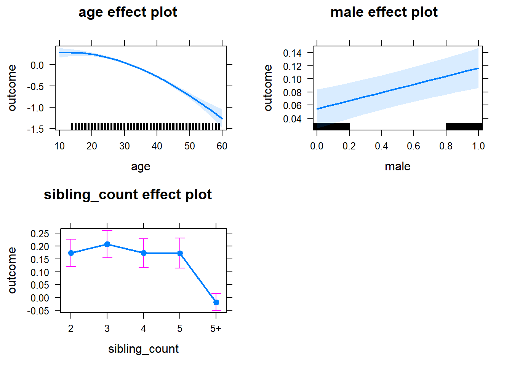
Add Birth Order Linear
Model Summary
tidy(m2_birthorder_linear, conf.int = T)| term | estimate | std.error | statistic | conf.low | conf.high | group |
|---|---|---|---|---|---|---|
| (Intercept) | 0.1824 | 0.2002 | 0.9114 | -0.2099 | 0.5748 | fixed |
| birth_order | -0.003077 | 0.00332 | -0.9269 | -0.009583 | 0.003429 | fixed |
| poly(age, 3, raw = TRUE)1 | 0.02632 | 0.02067 | 1.273 | -0.0142 | 0.06684 | fixed |
| poly(age, 3, raw = TRUE)2 | -0.001092 | 0.0006635 | -1.646 | -0.002393 | 0.0002085 | fixed |
| poly(age, 3, raw = TRUE)3 | 0.00000448 | 0.000006683 | 0.6704 | -0.000008618 | 0.00001758 | fixed |
| male | 0.06218 | 0.01493 | 4.164 | 0.03292 | 0.09145 | fixed |
| sibling_count3 | 0.03436 | 0.03437 | 0.9997 | -0.033 | 0.1017 | fixed |
| sibling_count4 | 0.001231 | 0.0359 | 0.0343 | -0.06913 | 0.07159 | fixed |
| sibling_count5 | 0.001859 | 0.03773 | 0.04927 | -0.07209 | 0.07581 | fixed |
| sibling_count5+ | -0.18 | 0.0317 | -5.679 | -0.2422 | -0.1179 | fixed |
| sd_(Intercept).mother_pidlink | 0.582 | NA | NA | NA | NA | mother_pidlink |
| sd_Observation.Residual | 0.744 | NA | NA | NA | NA | Residual |
Coefficient Plot
plot_birthorder2(m2_birthorder_linear, separate = FALSE, ylimits = ylimits)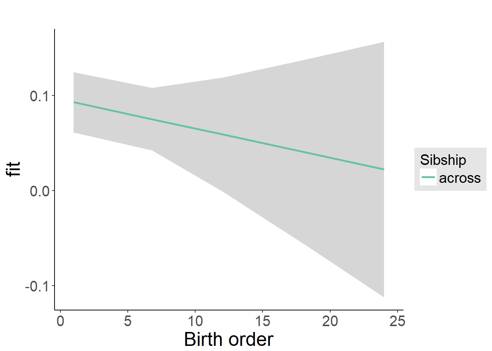
Add Birth Order Factor
Model Summary
m3_birthorder_nonlinear = update(m1_covariates_only, formula = . ~ . + birth_order_nonlinear)
tidy(m3_birthorder_nonlinear, conf.int = T)| term | estimate | std.error | statistic | conf.low | conf.high | group |
|---|---|---|---|---|---|---|
| (Intercept) | 0.1974 | 0.2017 | 0.9789 | -0.1979 | 0.5928 | fixed |
| poly(age, 3, raw = TRUE)1 | 0.02456 | 0.02074 | 1.184 | -0.01608 | 0.0652 | fixed |
| poly(age, 3, raw = TRUE)2 | -0.001027 | 0.0006661 | -1.542 | -0.002332 | 0.0002787 | fixed |
| poly(age, 3, raw = TRUE)3 | 0.000003763 | 0.000006717 | 0.5601 | -0.000009403 | 0.00001693 | fixed |
| male | 0.06205 | 0.01493 | 4.155 | 0.03278 | 0.09131 | fixed |
| sibling_count3 | 0.03503 | 0.0347 | 1.01 | -0.03298 | 0.103 | fixed |
| sibling_count4 | 0.005935 | 0.03659 | 0.1622 | -0.06578 | 0.07765 | fixed |
| sibling_count5 | 0.001283 | 0.03871 | 0.03314 | -0.07459 | 0.07716 | fixed |
| sibling_count5+ | -0.1803 | 0.03284 | -5.489 | -0.2446 | -0.1159 | fixed |
| birth_order_nonlinear2 | -0.01433 | 0.02147 | -0.6675 | -0.05641 | 0.02775 | fixed |
| birth_order_nonlinear3 | -0.0118 | 0.02501 | -0.4716 | -0.06082 | 0.03723 | fixed |
| birth_order_nonlinear4 | -0.03464 | 0.0284 | -1.22 | -0.0903 | 0.02102 | fixed |
| birth_order_nonlinear5 | 0.01513 | 0.03228 | 0.4688 | -0.04814 | 0.07841 | fixed |
| birth_order_nonlinear5+ | -0.02847 | 0.02793 | -1.019 | -0.08321 | 0.02627 | fixed |
| sd_(Intercept).mother_pidlink | 0.5822 | NA | NA | NA | NA | mother_pidlink |
| sd_Observation.Residual | 0.744 | NA | NA | NA | NA | Residual |
Coefficient Plot
plot_birthorder(m3_birthorder_nonlinear, separate = FALSE, ylimits = ylimits)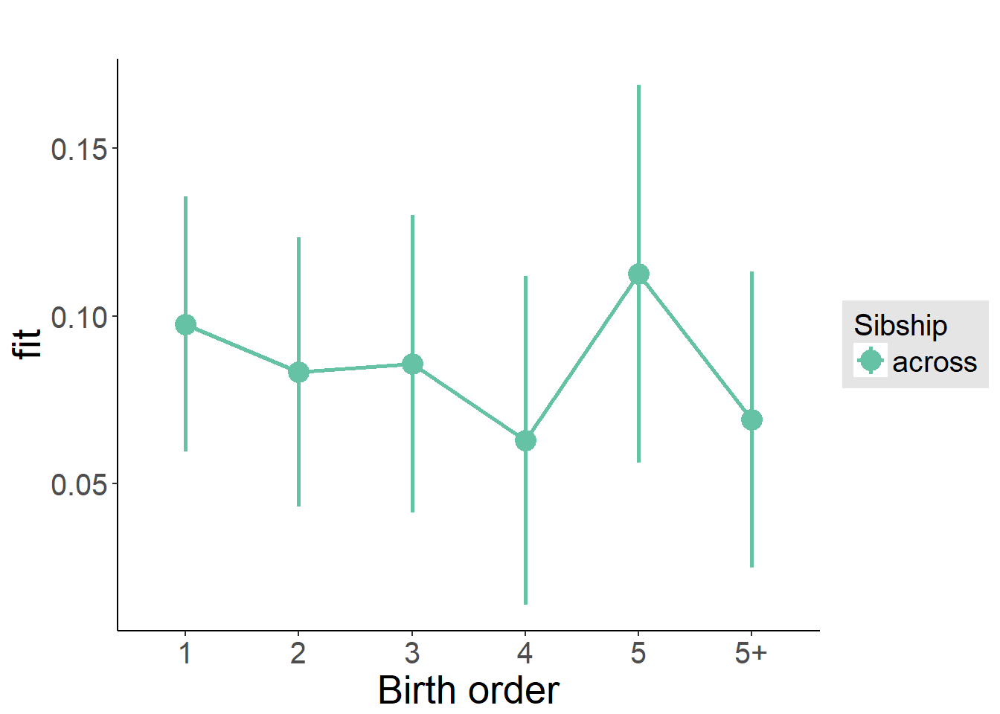
Add Interaction
Model Summary
m4_interaction = update(m3_birthorder_nonlinear, formula = . ~ . - birth_order_nonlinear - sibling_count + count_birth_order)
tidy(m4_interaction, conf.int = T)| term | estimate | std.error | statistic | conf.low | conf.high | group |
|---|---|---|---|---|---|---|
| (Intercept) | 0.1955 | 0.203 | 0.9634 | -0.2023 | 0.5933 | fixed |
| poly(age, 3, raw = TRUE)1 | 0.02567 | 0.02079 | 1.235 | -0.01507 | 0.06642 | fixed |
| poly(age, 3, raw = TRUE)2 | -0.00106 | 0.0006683 | -1.586 | -0.00237 | 0.00025 | fixed |
| poly(age, 3, raw = TRUE)3 | 0.000004077 | 0.000006744 | 0.6046 | -0.00000914 | 0.0000173 | fixed |
| male | 0.06191 | 0.01493 | 4.145 | 0.03264 | 0.09118 | fixed |
| count_birth_order2/2 | -0.04118 | 0.04236 | -0.9722 | -0.1242 | 0.04184 | fixed |
| count_birth_order1/3 | 0.02571 | 0.04281 | 0.6006 | -0.0582 | 0.1096 | fixed |
| count_birth_order2/3 | 0.01942 | 0.04732 | 0.4103 | -0.07334 | 0.1122 | fixed |
| count_birth_order3/3 | 0.0007667 | 0.05251 | 0.0146 | -0.1021 | 0.1037 | fixed |
| count_birth_order1/4 | -0.01819 | 0.04862 | -0.374 | -0.1135 | 0.07711 | fixed |
| count_birth_order2/4 | 0.01964 | 0.05083 | 0.3863 | -0.08 | 0.1193 | fixed |
| count_birth_order3/4 | -0.02461 | 0.05444 | -0.4519 | -0.1313 | 0.0821 | fixed |
| count_birth_order4/4 | -0.059 | 0.05719 | -1.032 | -0.1711 | 0.05308 | fixed |
| count_birth_order1/5 | -0.09978 | 0.05416 | -1.842 | -0.2059 | 0.006367 | fixed |
| count_birth_order2/5 | -0.00005492 | 0.05667 | -0.000969 | -0.1111 | 0.111 | fixed |
| count_birth_order3/5 | 0.003105 | 0.05811 | 0.05344 | -0.1108 | 0.117 | fixed |
| count_birth_order4/5 | -0.01033 | 0.06116 | -0.1689 | -0.1302 | 0.1095 | fixed |
| count_birth_order5/5 | 0.0591 | 0.06229 | 0.9489 | -0.06298 | 0.1812 | fixed |
| count_birth_order1/5+ | -0.1474 | 0.04374 | -3.371 | -0.2332 | -0.06171 | fixed |
| count_birth_order2/5+ | -0.2332 | 0.04485 | -5.198 | -0.3211 | -0.1452 | fixed |
| count_birth_order3/5+ | -0.1994 | 0.04399 | -4.531 | -0.2856 | -0.1131 | fixed |
| count_birth_order4/5+ | -0.2272 | 0.04306 | -5.276 | -0.3116 | -0.1428 | fixed |
| count_birth_order5/5+ | -0.1914 | 0.04332 | -4.419 | -0.2764 | -0.1065 | fixed |
| count_birth_order5+/5+ | -0.2187 | 0.03572 | -6.122 | -0.2887 | -0.1487 | fixed |
| sd_(Intercept).mother_pidlink | 0.5821 | NA | NA | NA | NA | mother_pidlink |
| sd_Observation.Residual | 0.7439 | NA | NA | NA | NA | Residual |
Coefficient Plot
plot_birthorder(m4_interaction, ylimits = ylimits)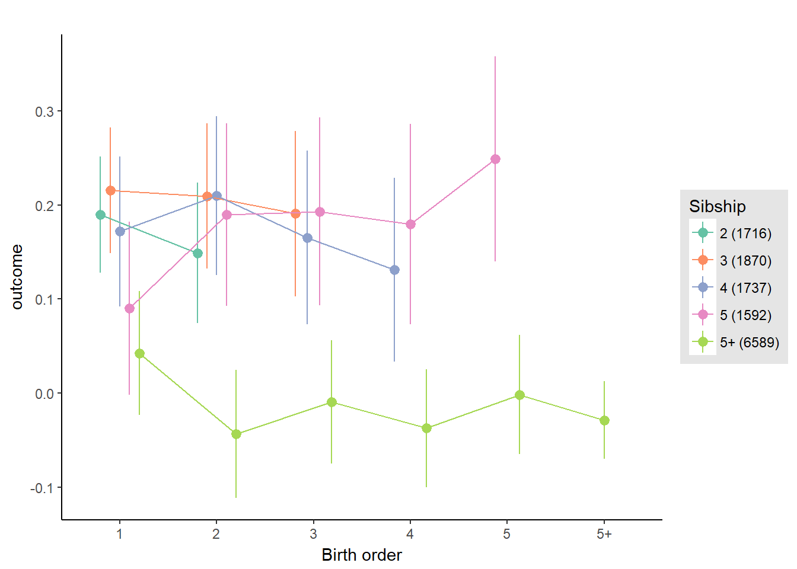
Model Comparison
###### Model 1 - Model 2
anova(m1_covariates_only, m2_birthorder_linear, m3_birthorder_nonlinear, m4_interaction)## refitting model(s) with ML (instead of REML)| Df | AIC | BIC | logLik | deviance | Chisq | Chi Df | Pr(>Chisq) |
|---|---|---|---|---|---|---|---|
| 11 | 35518 | 35600 | -17748 | 35496 | NA | NA | NA |
| 12 | 35519 | 35609 | -17747 | 35495 | 0.8602 | 1 | 0.3537 |
| 16 | 35524 | 35644 | -17746 | 35492 | 2.576 | 4 | 0.631 |
| 26 | 35532 | 35728 | -17740 | 35480 | 11.82 | 10 | 0.2971 |
Maternal birth order
outcome_uterus_m1 <- update(m2_birthorder_linear, data = birthorder %>%
mutate(sibling_count = sibling_count_uterus_alive_factor,
birth_order_nonlinear = birthorder_uterus_alive_factor,
birth_order = birthorder_uterus_alive,
count_birth_order = count_birthorder_uterus_alive) %>%
filter(sibling_count != "1"))
compare_models_markdown(outcome_uterus_m1)Basic Model
Model Summary
m1_covariates_only <- update(m2_birthorder_linear, formula = . ~ . - birth_order)
tidy(m1_covariates_only, conf.int = T)| term | estimate | std.error | statistic | conf.low | conf.high | group |
|---|---|---|---|---|---|---|
| (Intercept) | -0.8339 | 0.3708 | -2.249 | -1.561 | -0.1072 | fixed |
| poly(age, 3, raw = TRUE)1 | 0.1467 | 0.04203 | 3.489 | 0.06427 | 0.229 | fixed |
| poly(age, 3, raw = TRUE)2 | -0.004903 | 0.001499 | -3.271 | -0.007841 | -0.001965 | fixed |
| poly(age, 3, raw = TRUE)3 | 0.00004724 | 0.00001697 | 2.784 | 0.00001399 | 0.0000805 | fixed |
| male | -0.02065 | 0.02158 | -0.9572 | -0.06294 | 0.02164 | fixed |
| sibling_count3 | 0.0003067 | 0.03701 | 0.008289 | -0.07222 | 0.07284 | fixed |
| sibling_count4 | -0.0771 | 0.04036 | -1.91 | -0.1562 | 0.002002 | fixed |
| sibling_count5 | -0.1511 | 0.04636 | -3.26 | -0.242 | -0.06025 | fixed |
| sibling_count5+ | -0.2821 | 0.04094 | -6.891 | -0.3624 | -0.2019 | fixed |
| sd_(Intercept).mother_pidlink | 0.5177 | NA | NA | NA | NA | mother_pidlink |
| sd_Observation.Residual | 0.6977 | NA | NA | NA | NA | Residual |
Coefficient Plot
plot(allEffects(m1_covariates_only))
Add Birth Order Linear
Model Summary
tidy(m2_birthorder_linear, conf.int = T)| term | estimate | std.error | statistic | conf.low | conf.high | group |
|---|---|---|---|---|---|---|
| (Intercept) | -0.8412 | 0.3708 | -2.269 | -1.568 | -0.1145 | fixed |
| birth_order | 0.009041 | 0.007302 | 1.238 | -0.005271 | 0.02335 | fixed |
| poly(age, 3, raw = TRUE)1 | 0.146 | 0.04203 | 3.473 | 0.0636 | 0.2284 | fixed |
| poly(age, 3, raw = TRUE)2 | -0.004888 | 0.001499 | -3.261 | -0.007826 | -0.00195 | fixed |
| poly(age, 3, raw = TRUE)3 | 0.00004746 | 0.00001697 | 2.797 | 0.0000142 | 0.00008071 | fixed |
| male | -0.02114 | 0.02158 | -0.9795 | -0.06343 | 0.02116 | fixed |
| sibling_count3 | -0.004319 | 0.0372 | -0.1161 | -0.07722 | 0.06858 | fixed |
| sibling_count4 | -0.08824 | 0.04135 | -2.134 | -0.1693 | -0.007188 | fixed |
| sibling_count5 | -0.169 | 0.04857 | -3.48 | -0.2642 | -0.07383 | fixed |
| sibling_count5+ | -0.3178 | 0.05005 | -6.349 | -0.4159 | -0.2197 | fixed |
| sd_(Intercept).mother_pidlink | 0.518 | NA | NA | NA | NA | mother_pidlink |
| sd_Observation.Residual | 0.6974 | NA | NA | NA | NA | Residual |
Coefficient Plot
plot_birthorder2(m2_birthorder_linear, separate = FALSE, ylimits = ylimits)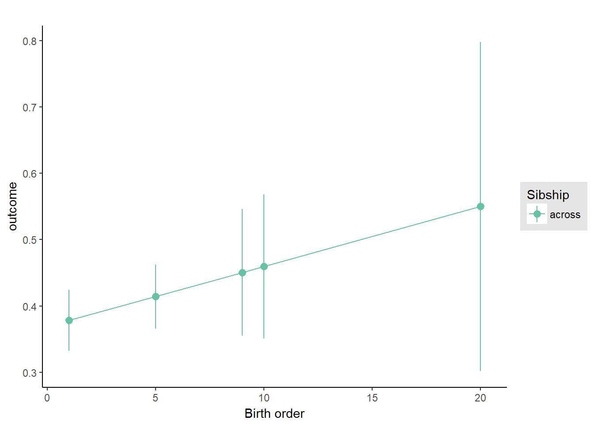
Add Birth Order Factor
Model Summary
m3_birthorder_nonlinear = update(m1_covariates_only, formula = . ~ . + birth_order_nonlinear)
tidy(m3_birthorder_nonlinear, conf.int = T)| term | estimate | std.error | statistic | conf.low | conf.high | group |
|---|---|---|---|---|---|---|
| (Intercept) | -0.8705 | 0.3718 | -2.341 | -1.599 | -0.1418 | fixed |
| poly(age, 3, raw = TRUE)1 | 0.1492 | 0.04209 | 3.546 | 0.06675 | 0.2317 | fixed |
| poly(age, 3, raw = TRUE)2 | -0.005006 | 0.001501 | -3.336 | -0.007947 | -0.002064 | fixed |
| poly(age, 3, raw = TRUE)3 | 0.00004879 | 0.00001699 | 2.872 | 0.0000155 | 0.00008209 | fixed |
| male | -0.02051 | 0.02158 | -0.9504 | -0.06281 | 0.02179 | fixed |
| sibling_count3 | -0.006197 | 0.0378 | -0.164 | -0.08028 | 0.06788 | fixed |
| sibling_count4 | -0.08533 | 0.04264 | -2.001 | -0.1689 | -0.001759 | fixed |
| sibling_count5 | -0.175 | 0.05049 | -3.466 | -0.2739 | -0.07602 | fixed |
| sibling_count5+ | -0.3206 | 0.05119 | -6.263 | -0.421 | -0.2203 | fixed |
| birth_order_nonlinear2 | 0.03959 | 0.02714 | 1.459 | -0.01361 | 0.09279 | fixed |
| birth_order_nonlinear3 | 0.02682 | 0.03361 | 0.7981 | -0.03905 | 0.09269 | fixed |
| birth_order_nonlinear4 | 0.0122 | 0.04178 | 0.292 | -0.06969 | 0.09409 | fixed |
| birth_order_nonlinear5 | 0.09656 | 0.05185 | 1.862 | -0.005073 | 0.1982 | fixed |
| birth_order_nonlinear5+ | 0.06261 | 0.05372 | 1.166 | -0.04268 | 0.1679 | fixed |
| sd_(Intercept).mother_pidlink | 0.5179 | NA | NA | NA | NA | mother_pidlink |
| sd_Observation.Residual | 0.6975 | NA | NA | NA | NA | Residual |
Coefficient Plot
plot_birthorder(m3_birthorder_nonlinear, separate = FALSE, ylimits = ylimits)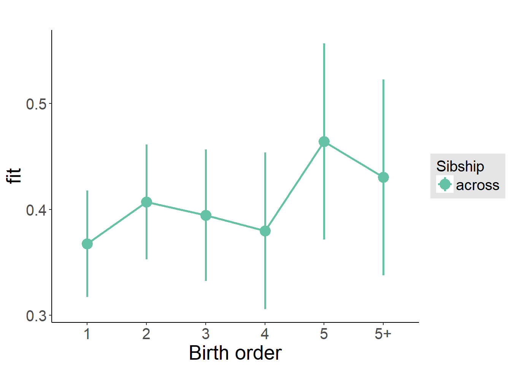
Add Interaction
Model Summary
m4_interaction = update(m3_birthorder_nonlinear, formula = . ~ . - birth_order_nonlinear - sibling_count + count_birth_order)
tidy(m4_interaction, conf.int = T)| term | estimate | std.error | statistic | conf.low | conf.high | group |
|---|---|---|---|---|---|---|
| (Intercept) | -0.8752 | 0.3728 | -2.348 | -1.606 | -0.1446 | fixed |
| poly(age, 3, raw = TRUE)1 | 0.1489 | 0.04219 | 3.53 | 0.06625 | 0.2316 | fixed |
| poly(age, 3, raw = TRUE)2 | -0.004981 | 0.001505 | -3.311 | -0.00793 | -0.002032 | fixed |
| poly(age, 3, raw = TRUE)3 | 0.00004837 | 0.00001704 | 2.839 | 0.00001498 | 0.00008176 | fixed |
| male | -0.02137 | 0.0216 | -0.9894 | -0.06371 | 0.02097 | fixed |
| count_birth_order2/2 | 0.05487 | 0.04968 | 1.105 | -0.0425 | 0.1522 | fixed |
| count_birth_order1/3 | -0.006477 | 0.04639 | -0.1396 | -0.0974 | 0.08444 | fixed |
| count_birth_order2/3 | 0.04298 | 0.05006 | 0.8586 | -0.05513 | 0.1411 | fixed |
| count_birth_order3/3 | 0.02919 | 0.0557 | 0.5241 | -0.07999 | 0.1384 | fixed |
| count_birth_order1/4 | -0.1094 | 0.05641 | -1.939 | -0.22 | 0.001176 | fixed |
| count_birth_order2/4 | -0.02503 | 0.05803 | -0.4314 | -0.1388 | 0.08871 | fixed |
| count_birth_order3/4 | -0.06345 | 0.06065 | -1.046 | -0.1823 | 0.05541 | fixed |
| count_birth_order4/4 | -0.03422 | 0.06329 | -0.5408 | -0.1583 | 0.08982 | fixed |
| count_birth_order1/5 | -0.1232 | 0.07517 | -1.639 | -0.2706 | 0.02409 | fixed |
| count_birth_order2/5 | -0.0938 | 0.08081 | -1.161 | -0.2522 | 0.06458 | fixed |
| count_birth_order3/5 | -0.1584 | 0.07568 | -2.093 | -0.3067 | -0.01005 | fixed |
| count_birth_order4/5 | -0.1877 | 0.07323 | -2.563 | -0.3312 | -0.04416 | fixed |
| count_birth_order5/5 | -0.1089 | 0.07511 | -1.45 | -0.2561 | 0.03829 | fixed |
| count_birth_order1/5+ | -0.2572 | 0.07465 | -3.446 | -0.4035 | -0.1109 | fixed |
| count_birth_order2/5+ | -0.373 | 0.07449 | -5.008 | -0.519 | -0.227 | fixed |
| count_birth_order3/5+ | -0.2644 | 0.07378 | -3.583 | -0.409 | -0.1198 | fixed |
| count_birth_order4/5+ | -0.3211 | 0.06919 | -4.641 | -0.4567 | -0.1855 | fixed |
| count_birth_order5/5+ | -0.1957 | 0.06586 | -2.972 | -0.3248 | -0.06663 | fixed |
| count_birth_order5+/5+ | -0.2531 | 0.05163 | -4.903 | -0.3543 | -0.152 | fixed |
| sd_(Intercept).mother_pidlink | 0.5182 | NA | NA | NA | NA | mother_pidlink |
| sd_Observation.Residual | 0.6977 | NA | NA | NA | NA | Residual |
Coefficient Plot
plot_birthorder(m4_interaction, ylimits = ylimits)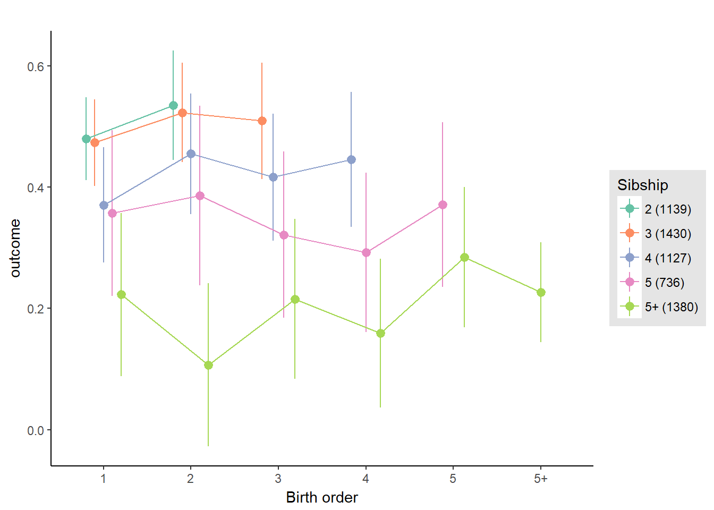
Model Comparison
###### Model 1 - Model 2
anova(m1_covariates_only, m2_birthorder_linear, m3_birthorder_nonlinear, m4_interaction)## refitting model(s) with ML (instead of REML)| Df | AIC | BIC | logLik | deviance | Chisq | Chi Df | Pr(>Chisq) |
|---|---|---|---|---|---|---|---|
| 11 | 14535 | 14608 | -7257 | 14513 | NA | NA | NA |
| 12 | 14536 | 14616 | -7256 | 14512 | 1.533 | 1 | 0.2156 |
| 16 | 14540 | 14647 | -7254 | 14508 | 3.603 | 4 | 0.4623 |
| 26 | 14553 | 14727 | -7251 | 14501 | 6.45 | 10 | 0.7761 |
Maternal pregnancy order
outcome_preg_m1 <- update(m2_birthorder_linear, data = birthorder %>%
mutate(sibling_count = sibling_count_uterus_preg_factor,
birth_order_nonlinear = birthorder_uterus_preg_factor,
birth_order = birthorder_uterus_preg,
count_birth_order = count_birthorder_uterus_preg
) %>%
filter(sibling_count != "1"))
compare_models_markdown(outcome_preg_m1)Basic Model
Model Summary
m1_covariates_only <- update(m2_birthorder_linear, formula = . ~ . - birth_order)
tidy(m1_covariates_only, conf.int = T)| term | estimate | std.error | statistic | conf.low | conf.high | group |
|---|---|---|---|---|---|---|
| (Intercept) | -0.8021 | 0.3701 | -2.168 | -1.527 | -0.07681 | fixed |
| poly(age, 3, raw = TRUE)1 | 0.1431 | 0.04197 | 3.41 | 0.06086 | 0.2254 | fixed |
| poly(age, 3, raw = TRUE)2 | -0.004819 | 0.001497 | -3.219 | -0.007753 | -0.001885 | fixed |
| poly(age, 3, raw = TRUE)3 | 0.00004624 | 0.00001695 | 2.728 | 0.00001302 | 0.00007946 | fixed |
| male | -0.02123 | 0.02151 | -0.9869 | -0.0634 | 0.02093 | fixed |
| sibling_count3 | 0.006856 | 0.03997 | 0.1715 | -0.07149 | 0.0852 | fixed |
| sibling_count4 | -0.0426 | 0.0426 | -1 | -0.1261 | 0.04089 | fixed |
| sibling_count5 | -0.07804 | 0.04578 | -1.705 | -0.1678 | 0.01168 | fixed |
| sibling_count5+ | -0.1916 | 0.04007 | -4.783 | -0.2702 | -0.1131 | fixed |
| sd_(Intercept).mother_pidlink | 0.5208 | NA | NA | NA | NA | mother_pidlink |
| sd_Observation.Residual | 0.6974 | NA | NA | NA | NA | Residual |
Coefficient Plot
plot(allEffects(m1_covariates_only))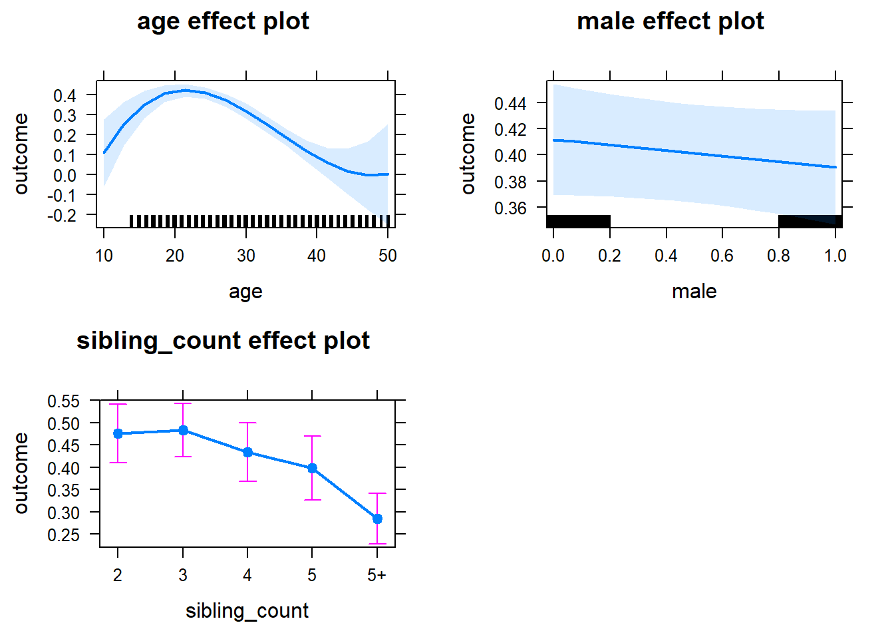
Add Birth Order Linear
Model Summary
tidy(m2_birthorder_linear, conf.int = T)| term | estimate | std.error | statistic | conf.low | conf.high | group |
|---|---|---|---|---|---|---|
| (Intercept) | -0.7996 | 0.3702 | -2.16 | -1.525 | -0.07407 | fixed |
| birth_order | -0.002276 | 0.006431 | -0.354 | -0.01488 | 0.01033 | fixed |
| poly(age, 3, raw = TRUE)1 | 0.1432 | 0.04197 | 3.412 | 0.06094 | 0.2255 | fixed |
| poly(age, 3, raw = TRUE)2 | -0.00482 | 0.001497 | -3.219 | -0.007754 | -0.001885 | fixed |
| poly(age, 3, raw = TRUE)3 | 0.00004615 | 0.00001695 | 2.722 | 0.00001293 | 0.00007938 | fixed |
| male | -0.02113 | 0.02152 | -0.9817 | -0.0633 | 0.02105 | fixed |
| sibling_count3 | 0.008026 | 0.04011 | 0.2001 | -0.07059 | 0.08664 | fixed |
| sibling_count4 | -0.03991 | 0.04327 | -0.9224 | -0.1247 | 0.0449 | fixed |
| sibling_count5 | -0.07387 | 0.04727 | -1.563 | -0.1665 | 0.01878 | fixed |
| sibling_count5+ | -0.183 | 0.04692 | -3.9 | -0.275 | -0.09105 | fixed |
| sd_(Intercept).mother_pidlink | 0.5206 | NA | NA | NA | NA | mother_pidlink |
| sd_Observation.Residual | 0.6975 | NA | NA | NA | NA | Residual |
Coefficient Plot
plot_birthorder2(m2_birthorder_linear, separate = FALSE, ylimits = ylimits)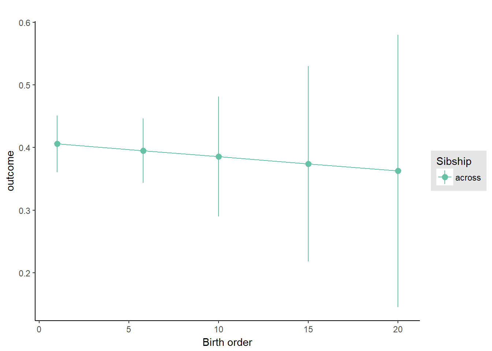
Add Birth Order Factor
Model Summary
m3_birthorder_nonlinear = update(m1_covariates_only, formula = . ~ . + birth_order_nonlinear)
tidy(m3_birthorder_nonlinear, conf.int = T)| term | estimate | std.error | statistic | conf.low | conf.high | group |
|---|---|---|---|---|---|---|
| (Intercept) | -0.8363 | 0.371 | -2.254 | -1.564 | -0.1091 | fixed |
| poly(age, 3, raw = TRUE)1 | 0.1458 | 0.04202 | 3.469 | 0.06341 | 0.2281 | fixed |
| poly(age, 3, raw = TRUE)2 | -0.004913 | 0.001499 | -3.278 | -0.00785 | -0.001975 | fixed |
| poly(age, 3, raw = TRUE)3 | 0.00004722 | 0.00001697 | 2.782 | 0.00001395 | 0.00008048 | fixed |
| male | -0.02023 | 0.02152 | -0.9401 | -0.06242 | 0.02195 | fixed |
| sibling_count3 | 0.008151 | 0.04069 | 0.2003 | -0.07159 | 0.0879 | fixed |
| sibling_count4 | -0.03462 | 0.04449 | -0.7782 | -0.1218 | 0.05258 | fixed |
| sibling_count5 | -0.0762 | 0.04905 | -1.554 | -0.1723 | 0.01993 | fixed |
| sibling_count5+ | -0.1822 | 0.04805 | -3.792 | -0.2764 | -0.08804 | fixed |
| birth_order_nonlinear2 | 0.0345 | 0.02777 | 1.242 | -0.01993 | 0.08893 | fixed |
| birth_order_nonlinear3 | -0.005354 | 0.03358 | -0.1595 | -0.07117 | 0.06046 | fixed |
| birth_order_nonlinear4 | -0.02399 | 0.0407 | -0.5894 | -0.1038 | 0.05579 | fixed |
| birth_order_nonlinear5 | 0.04948 | 0.0496 | 0.9975 | -0.04774 | 0.1467 | fixed |
| birth_order_nonlinear5+ | -0.009693 | 0.04843 | -0.2002 | -0.1046 | 0.08522 | fixed |
| sd_(Intercept).mother_pidlink | 0.5206 | NA | NA | NA | NA | mother_pidlink |
| sd_Observation.Residual | 0.6975 | NA | NA | NA | NA | Residual |
Coefficient Plot
plot_birthorder(m3_birthorder_nonlinear, separate = FALSE, ylimits = ylimits)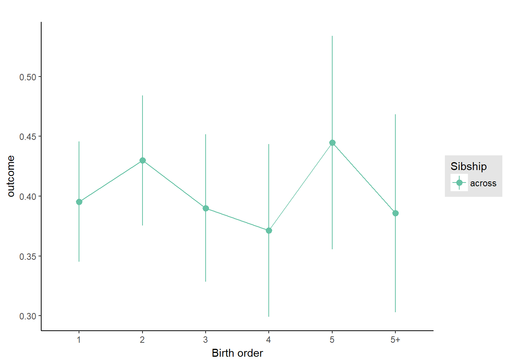
Add Interaction
Model Summary
m4_interaction = update(m3_birthorder_nonlinear, formula = . ~ . - birth_order_nonlinear - sibling_count + count_birth_order)
tidy(m4_interaction, conf.int = T)| term | estimate | std.error | statistic | conf.low | conf.high | group |
|---|---|---|---|---|---|---|
| (Intercept) | -0.8476 | 0.3718 | -2.28 | -1.576 | -0.1188 | fixed |
| poly(age, 3, raw = TRUE)1 | 0.1447 | 0.04207 | 3.438 | 0.0622 | 0.2271 | fixed |
| poly(age, 3, raw = TRUE)2 | -0.004861 | 0.001501 | -3.238 | -0.007803 | -0.001919 | fixed |
| poly(age, 3, raw = TRUE)3 | 0.00004649 | 0.000017 | 2.734 | 0.00001317 | 0.00007981 | fixed |
| male | -0.02115 | 0.02153 | -0.9822 | -0.06334 | 0.02105 | fixed |
| count_birth_order2/2 | 0.09269 | 0.05458 | 1.698 | -0.01428 | 0.1997 | fixed |
| count_birth_order1/3 | 0.03991 | 0.05027 | 0.7939 | -0.05862 | 0.1384 | fixed |
| count_birth_order2/3 | 0.02977 | 0.05389 | 0.5524 | -0.07585 | 0.1354 | fixed |
| count_birth_order3/3 | 0.04257 | 0.06031 | 0.7058 | -0.07564 | 0.1608 | fixed |
| count_birth_order1/4 | -0.07608 | 0.05917 | -1.286 | -0.1921 | 0.03989 | fixed |
| count_birth_order2/4 | 0.08764 | 0.06018 | 1.456 | -0.03032 | 0.2056 | fixed |
| count_birth_order3/4 | -0.0303 | 0.065 | -0.4661 | -0.1577 | 0.0971 | fixed |
| count_birth_order4/4 | -0.03003 | 0.06725 | -0.4466 | -0.1618 | 0.1018 | fixed |
| count_birth_order1/5 | -0.0001437 | 0.06919 | -0.002077 | -0.1357 | 0.1355 | fixed |
| count_birth_order2/5 | -0.01429 | 0.07426 | -0.1925 | -0.1598 | 0.1313 | fixed |
| count_birth_order3/5 | -0.1014 | 0.07188 | -1.411 | -0.2423 | 0.03948 | fixed |
| count_birth_order4/5 | -0.1037 | 0.07452 | -1.391 | -0.2497 | 0.04236 | fixed |
| count_birth_order5/5 | -0.02898 | 0.07439 | -0.3896 | -0.1748 | 0.1168 | fixed |
| count_birth_order1/5+ | -0.1089 | 0.06599 | -1.65 | -0.2382 | 0.02047 | fixed |
| count_birth_order2/5+ | -0.2303 | 0.06883 | -3.346 | -0.3652 | -0.09542 | fixed |
| count_birth_order3/5+ | -0.1537 | 0.06699 | -2.294 | -0.285 | -0.02239 | fixed |
| count_birth_order4/5+ | -0.1817 | 0.06466 | -2.81 | -0.3084 | -0.05497 | fixed |
| count_birth_order5/5+ | -0.1002 | 0.06589 | -1.52 | -0.2293 | 0.02896 | fixed |
| count_birth_order5+/5+ | -0.1736 | 0.05057 | -3.433 | -0.2727 | -0.07449 | fixed |
| sd_(Intercept).mother_pidlink | 0.5209 | NA | NA | NA | NA | mother_pidlink |
| sd_Observation.Residual | 0.6971 | NA | NA | NA | NA | Residual |
Coefficient Plot
plot_birthorder(m4_interaction, ylimits = ylimits)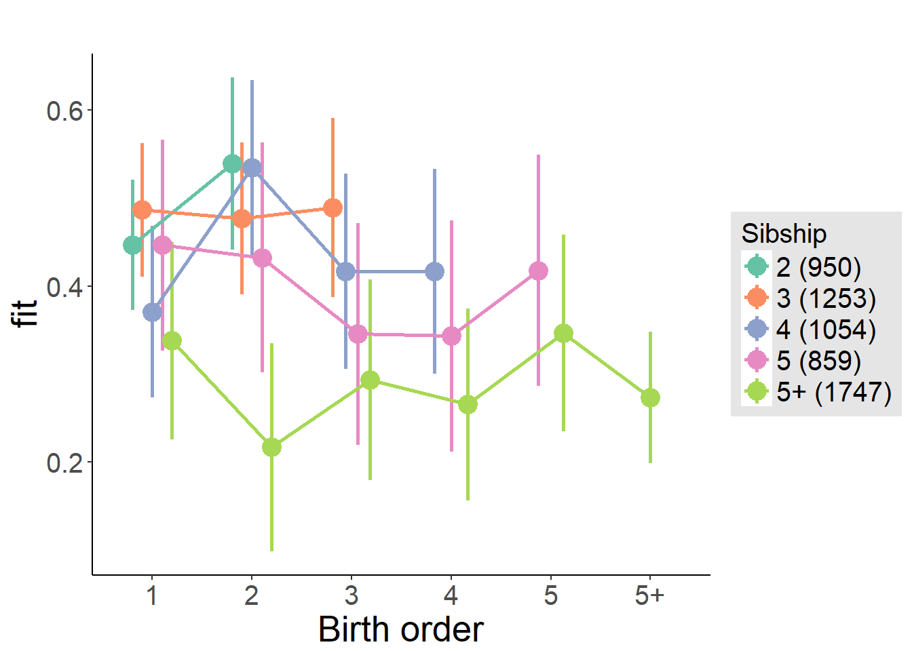
Model Comparison
###### Model 1 - Model 2
anova(m1_covariates_only, m2_birthorder_linear, m3_birthorder_nonlinear, m4_interaction)## refitting model(s) with ML (instead of REML)| Df | AIC | BIC | logLik | deviance | Chisq | Chi Df | Pr(>Chisq) |
|---|---|---|---|---|---|---|---|
| 11 | 14682 | 14755 | -7330 | 14660 | NA | NA | NA |
| 12 | 14684 | 14764 | -7330 | 14660 | 0.1261 | 1 | 0.7225 |
| 16 | 14687 | 14794 | -7328 | 14655 | 4.215 | 4 | 0.3777 |
| 26 | 14694 | 14868 | -7321 | 14642 | 13.01 | 10 | 0.2232 |
Parental full sibling order
outcome_parental_m1 <- update(m2_birthorder_linear, data = birthorder %>%
mutate(sibling_count = sibling_count_genes_factor,
birth_order_nonlinear = birthorder_genes_factor,
birth_order = birthorder_genes,
count_birth_order = count_birthorder_genes
) %>%
filter(sibling_count != "1"))
compare_models_markdown(outcome_parental_m1)Basic Model
Model Summary
m1_covariates_only <- update(m2_birthorder_linear, formula = . ~ . - birth_order)
tidy(m1_covariates_only, conf.int = T)| term | estimate | std.error | statistic | conf.low | conf.high | group |
|---|---|---|---|---|---|---|
| (Intercept) | -0.9226 | 0.3751 | -2.46 | -1.658 | -0.1875 | fixed |
| poly(age, 3, raw = TRUE)1 | 0.1559 | 0.04254 | 3.665 | 0.07254 | 0.2393 | fixed |
| poly(age, 3, raw = TRUE)2 | -0.005258 | 0.001517 | -3.465 | -0.008231 | -0.002284 | fixed |
| poly(age, 3, raw = TRUE)3 | 0.0000515 | 0.00001718 | 2.997 | 0.00001782 | 0.00008518 | fixed |
| male | -0.02117 | 0.0218 | -0.9713 | -0.06389 | 0.02155 | fixed |
| sibling_count3 | 0.01472 | 0.03647 | 0.4035 | -0.05677 | 0.0862 | fixed |
| sibling_count4 | -0.06404 | 0.04 | -1.601 | -0.1424 | 0.01437 | fixed |
| sibling_count5 | -0.1279 | 0.04754 | -2.691 | -0.2211 | -0.03476 | fixed |
| sibling_count5+ | -0.271 | 0.04142 | -6.541 | -0.3522 | -0.1898 | fixed |
| sd_(Intercept).mother_pidlink | 0.5155 | NA | NA | NA | NA | mother_pidlink |
| sd_Observation.Residual | 0.6986 | NA | NA | NA | NA | Residual |
Coefficient Plot
plot(allEffects(m1_covariates_only))Add Birth Order Linear
Model Summary
tidy(m2_birthorder_linear, conf.int = T)| term | estimate | std.error | statistic | conf.low | conf.high | group |
|---|---|---|---|---|---|---|
| (Intercept) | -0.9298 | 0.3751 | -2.479 | -1.665 | -0.1947 | fixed |
| birth_order | 0.01005 | 0.007512 | 1.338 | -0.004672 | 0.02477 | fixed |
| poly(age, 3, raw = TRUE)1 | 0.1551 | 0.04254 | 3.646 | 0.07172 | 0.2385 | fixed |
| poly(age, 3, raw = TRUE)2 | -0.005241 | 0.001517 | -3.454 | -0.008214 | -0.002267 | fixed |
| poly(age, 3, raw = TRUE)3 | 0.00005174 | 0.00001718 | 3.011 | 0.00001806 | 0.00008542 | fixed |
| male | -0.0215 | 0.0218 | -0.9866 | -0.06422 | 0.02122 | fixed |
| sibling_count3 | 0.009523 | 0.03668 | 0.2596 | -0.06237 | 0.08141 | fixed |
| sibling_count4 | -0.07619 | 0.04102 | -1.857 | -0.1566 | 0.004212 | fixed |
| sibling_count5 | -0.147 | 0.04963 | -2.962 | -0.2443 | -0.04973 | fixed |
| sibling_count5+ | -0.3101 | 0.0507 | -6.116 | -0.4095 | -0.2107 | fixed |
| sd_(Intercept).mother_pidlink | 0.5157 | NA | NA | NA | NA | mother_pidlink |
| sd_Observation.Residual | 0.6984 | NA | NA | NA | NA | Residual |
Coefficient Plot
plot_birthorder2(m2_birthorder_linear, separate = FALSE, ylimits = ylimits)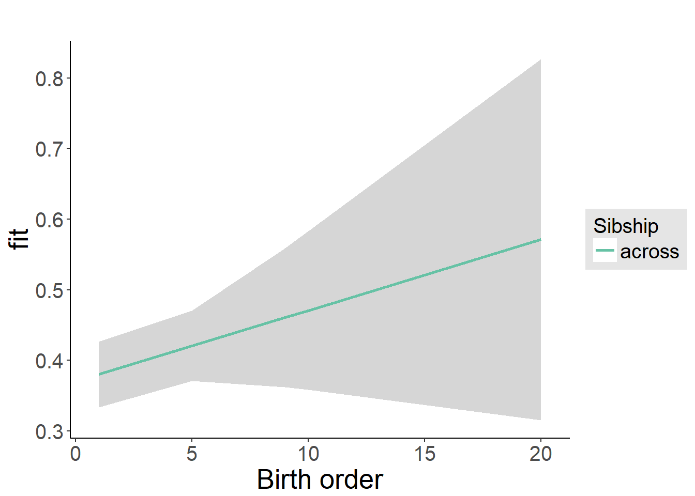
Add Birth Order Factor
Model Summary
m3_birthorder_nonlinear = update(m1_covariates_only, formula = . ~ . + birth_order_nonlinear)
tidy(m3_birthorder_nonlinear, conf.int = T)| term | estimate | std.error | statistic | conf.low | conf.high | group |
|---|---|---|---|---|---|---|
| (Intercept) | -0.9568 | 0.3761 | -2.544 | -1.694 | -0.2197 | fixed |
| poly(age, 3, raw = TRUE)1 | 0.1581 | 0.0426 | 3.711 | 0.07459 | 0.2416 | fixed |
| poly(age, 3, raw = TRUE)2 | -0.005346 | 0.001519 | -3.519 | -0.008323 | -0.002369 | fixed |
| poly(age, 3, raw = TRUE)3 | 0.0000529 | 0.0000172 | 3.075 | 0.00001918 | 0.00008662 | fixed |
| male | -0.0212 | 0.0218 | -0.9723 | -0.06393 | 0.02153 | fixed |
| sibling_count3 | 0.00883 | 0.03729 | 0.2368 | -0.06427 | 0.08192 | fixed |
| sibling_count4 | -0.07612 | 0.04236 | -1.797 | -0.1591 | 0.006895 | fixed |
| sibling_count5 | -0.1499 | 0.05142 | -2.914 | -0.2506 | -0.04907 | fixed |
| sibling_count5+ | -0.3102 | 0.05189 | -5.978 | -0.4119 | -0.2085 | fixed |
| birth_order_nonlinear2 | 0.04352 | 0.02709 | 1.606 | -0.00958 | 0.09662 | fixed |
| birth_order_nonlinear3 | 0.02617 | 0.03362 | 0.7785 | -0.03972 | 0.09207 | fixed |
| birth_order_nonlinear4 | 0.0344 | 0.04292 | 0.8015 | -0.04972 | 0.1185 | fixed |
| birth_order_nonlinear5 | 0.07337 | 0.05415 | 1.355 | -0.03276 | 0.1795 | fixed |
| birth_order_nonlinear5+ | 0.06926 | 0.0553 | 1.252 | -0.03912 | 0.1776 | fixed |
| sd_(Intercept).mother_pidlink | 0.5155 | NA | NA | NA | NA | mother_pidlink |
| sd_Observation.Residual | 0.6987 | NA | NA | NA | NA | Residual |
Coefficient Plot
plot_birthorder(m3_birthorder_nonlinear, separate = FALSE, ylimits = ylimits)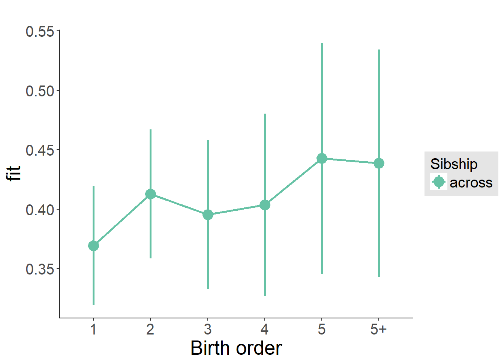
Add Interaction
Model Summary
m4_interaction = update(m3_birthorder_nonlinear, formula = . ~ . - birth_order_nonlinear - sibling_count + count_birth_order)
tidy(m4_interaction, conf.int = T)| term | estimate | std.error | statistic | conf.low | conf.high | group |
|---|---|---|---|---|---|---|
| (Intercept) | -0.9636 | 0.3773 | -2.554 | -1.703 | -0.2242 | fixed |
| poly(age, 3, raw = TRUE)1 | 0.1579 | 0.04271 | 3.697 | 0.07418 | 0.2416 | fixed |
| poly(age, 3, raw = TRUE)2 | -0.005325 | 0.001524 | -3.495 | -0.008311 | -0.002339 | fixed |
| poly(age, 3, raw = TRUE)3 | 0.0000525 | 0.00001726 | 3.042 | 0.00001867 | 0.00008633 | fixed |
| male | -0.02235 | 0.02182 | -1.024 | -0.06513 | 0.02042 | fixed |
| count_birth_order2/2 | 0.06086 | 0.04827 | 1.261 | -0.03375 | 0.1555 | fixed |
| count_birth_order1/3 | 0.007247 | 0.04578 | 0.1583 | -0.08247 | 0.09696 | fixed |
| count_birth_order2/3 | 0.0644 | 0.04994 | 1.29 | -0.03348 | 0.1623 | fixed |
| count_birth_order3/3 | 0.04643 | 0.05471 | 0.8486 | -0.0608 | 0.1537 | fixed |
| count_birth_order1/4 | -0.09561 | 0.05654 | -1.691 | -0.2064 | 0.0152 | fixed |
| count_birth_order2/4 | -0.0208 | 0.05792 | -0.3592 | -0.1343 | 0.09272 | fixed |
| count_birth_order3/4 | -0.04594 | 0.06005 | -0.765 | -0.1636 | 0.07176 | fixed |
| count_birth_order4/4 | -0.004906 | 0.06335 | -0.07745 | -0.1291 | 0.1192 | fixed |
| count_birth_order1/5 | -0.1047 | 0.07511 | -1.394 | -0.252 | 0.04248 | fixed |
| count_birth_order2/5 | -0.07203 | 0.08321 | -0.8656 | -0.2351 | 0.09106 | fixed |
| count_birth_order3/5 | -0.1374 | 0.0791 | -1.738 | -0.2925 | 0.01759 | fixed |
| count_birth_order4/5 | -0.1243 | 0.0766 | -1.623 | -0.2745 | 0.02578 | fixed |
| count_birth_order5/5 | -0.112 | 0.08027 | -1.395 | -0.2693 | 0.04534 | fixed |
| count_birth_order1/5+ | -0.2309 | 0.07637 | -3.024 | -0.3806 | -0.08123 | fixed |
| count_birth_order2/5+ | -0.3469 | 0.07643 | -4.539 | -0.4967 | -0.1971 | fixed |
| count_birth_order3/5+ | -0.2686 | 0.07462 | -3.599 | -0.4149 | -0.1223 | fixed |
| count_birth_order4/5+ | -0.3014 | 0.07262 | -4.15 | -0.4437 | -0.1591 | fixed |
| count_birth_order5/5+ | -0.2063 | 0.06741 | -3.061 | -0.3385 | -0.07422 | fixed |
| count_birth_order5+/5+ | -0.2356 | 0.05257 | -4.482 | -0.3386 | -0.1326 | fixed |
| sd_(Intercept).mother_pidlink | 0.5157 | NA | NA | NA | NA | mother_pidlink |
| sd_Observation.Residual | 0.699 | NA | NA | NA | NA | Residual |
Coefficient Plot
plot_birthorder(m4_interaction, ylimits = ylimits)Model Comparison
###### Model 1 - Model 2
anova(m1_covariates_only, m2_birthorder_linear, m3_birthorder_nonlinear, m4_interaction)## refitting model(s) with ML (instead of REML)| Df | AIC | BIC | logLik | deviance | Chisq | Chi Df | Pr(>Chisq) |
|---|---|---|---|---|---|---|---|
| 11 | 14247 | 14320 | -7112 | 14225 | NA | NA | NA |
| 12 | 14247 | 14327 | -7111 | 14223 | 1.792 | 1 | 0.1807 |
| 16 | 14253 | 14359 | -7110 | 14221 | 2.106 | 4 | 0.7163 |
| 26 | 14267 | 14440 | -7108 | 14215 | 5.623 | 10 | 0.8458 |
Compare birth order specifications
library(coefplot)
multiplot(outcome_naive_m1, outcome_preg_m1, outcome_uterus_m1, outcome_parental_m1, dodgeHeight = 0.6,
intercept = FALSE)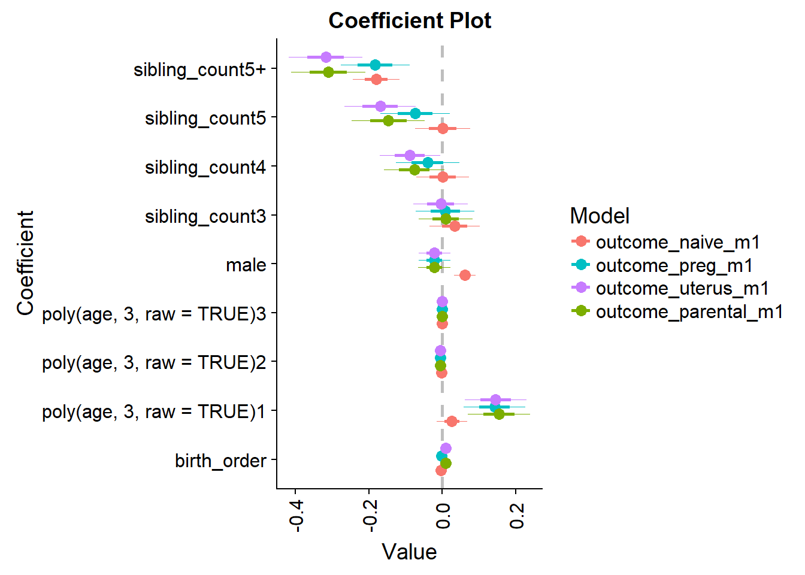
LS0tCm91dHB1dDogaHRtbF9kb2N1bWVudAplZGl0b3Jfb3B0aW9uczogCiAgY2h1bmtfb3V0cHV0X3R5cGU6IGNvbnNvbGUKLS0tCiMgPHNwYW4gc3R5bGU9ImNvbG9yOiNBNkQ4NTQiPkJpcnRoIE9yZGVyIEVmZmVjdHM8L3NwYW4+IHsudGFic2V0fQoKIyMgSGVscGVyCmBgYHtyIGhlbHBlcn0Kc291cmNlKCIwX2hlbHBlcnMuUiIpCm9wdHNfY2h1bmskc2V0KHdhcm5pbmcgPSBGQUxTRSkKYGBgCgojIyBMb2FkIGRhdGEKYGBge3IgTG9hZCBEYXRhfQpiaXJ0aG9yZGVyID0gcmVhZFJEUygiZGF0YS9hbGxkYXRhX2JpcnRob3JkZXIucmRzIikKYGBgCgojIyBEYXRhIHByZXBhcmF0aW9ucwpgYGB7ciBkYXRhIHByZXBhcmF0aW9uc30KIyBGb3IgYW5hbHlzZXMgd2Ugd2FudCB0byBjbGVhbiB0aGUgZGF0YXNldCBhbmQgZ2V0IHJpZCBvZiBhbGwgdW5pbnRlcmVzdGluZyBkYXRhCmJpcnRob3JkZXIgPSBiaXJ0aG9yZGVyICU+JQogIGZpbHRlcighaXMubmEocGlkbGluaykpICU+JSAjIG5vIGluZGl2aWR1YWxzIHdobyBhcmUgb25seSBrbm93biBmcm9tIHRoZSBwcmVnbmFuY3kgZmlsZQogIGZpbHRlcihpcy5uYShsaWZlYmlydGhzKSB8IGxpZmViaXJ0aHMgPT0gMikgJT4lICMgcmVtb3ZlIDcgYW5kIDIgaW5kaXZpZHVhbHMgd2hvIGFyZSBrbm93biBhcyBzdGlsbGJpcnRoIG9yIG1pc2NhcnJpYWdlIGJ1dCBzdGlsbCBoYXZlIFBJRAogIHNlbGVjdCgtbGlmZWJpcnRocykgJT4lCiAgZmlsdGVyKCFpcy5uYShtb3RoZXJfcGlkbGluaykpICU+JQogIHNlbGVjdCgtZmF0aGVyX3BpZGxpbmspICU+JQogIGZpbHRlcihpcy5uYShhbnlfbXVsdGlwbGVfYmlydGgpIHwgYW55X211bHRpcGxlX2JpcnRoICE9IDEpICU+JSAjIHJlbW92ZSBmYW1pbGllcyB3aXRoIHR3aW5zL3RyaXBsZXRzLy4uCiAgZmlsdGVyKCFpcy5uYShiaXJ0aG9yZGVyX25haXZlKSkgJT4lCiAgc2VsZWN0KC1zdGFydHNfd2l0aCgiYWdlXyIpLCAtd2F2ZSwgLWFueV9tdWx0aXBsZV9iaXJ0aCwgLW11bHRpcGxlX2JpcnRoKSAlPiUKICBtdXRhdGUobW9uZXlfc3BlbnRfc21va2luZ19sb2cgPSBpZl9lbHNlKGlzLm5hKG1vbmV5X3NwZW50X3Ntb2tpbmdfbG9nKSAmIGV2ZXJfc21va2VkID09IDAsIDAsIG1vbmV5X3NwZW50X3Ntb2tpbmdfbG9nKSwKICAgICAgICAgYW1vdW50ID0gaWZfZWxzZShpcy5uYShhbW91bnQpICYgZXZlcl9zbW9rZWQgPT0gMCwgMCwgYW1vdW50KSwKICAgICAgICAgYW1vdW50X3N0aWxsX3Ntb2tlcnMgPSBpZl9lbHNlKGlzLm5hKGFtb3VudF9zdGlsbF9zbW9rZXJzKSAmICBzdGlsbF9zbW9raW5nID09IDAsIDAsIGFtb3VudF9zdGlsbF9zbW9rZXJzKSwKICAgICAgICAgYmlydGh5ZWFyID0gbHVicmlkYXRlOjp5ZWFyKGJpcnRoZGF0ZSkpCgojIHJlY29kZSBGYWN0b3IgVmFyaWFibGUgYXMgRHVtbXkgVmFyaWFibGUKYmlydGhvcmRlciA9IGxlZnRfam9pbihiaXJ0aG9yZGVyLAogICAgICAgICAgICAgICAgICAgICAgICAgICAgICAgIGJpcnRob3JkZXIgJT4lCiAgICAgICAgICAgICAgICAgICAgICAgICAgICAgICAgICBmaWx0ZXIoIWlzLm5hKENhdGVnb3J5KSkgJT4lCiAgICAgICAgICAgICAgICAgICAgICAgICAgICAgICAgICBtdXRhdGUodmFyID0gMSkgJT4lCiAgICAgICAgICAgICAgICAgICAgICAgICAgICAgICAgICBzZWxlY3QocGlkbGluaywgQ2F0ZWdvcnksIHZhcikgJT4lCiAgICAgICAgICAgICAgICAgICAgICAgICAgICAgICAgICBzcHJlYWQoQ2F0ZWdvcnksIHZhciwgZmlsbCA9IDAsIHNlcCA9ICJfIiksIGJ5ID0gInBpZGxpbmsiKSAlPiUKICBzZWxlY3QoLUNhdGVnb3J5KQoKIyByZWNvZGUgRmFjdG9yIFZhcmlhYmxlIGFzIER1bW15IFZhcmlhYmxlCmJpcnRob3JkZXIgPSBsZWZ0X2pvaW4oYmlydGhvcmRlciwKICAgICAgICAgICAgICAgICAgICAgICAgICAgICAgICBiaXJ0aG9yZGVyICU+JQogICAgICAgICAgICAgICAgICAgICAgICAgICAgICAgICAgZmlsdGVyKCFpcy5uYShTZWN0b3IpKSAlPiUKICAgICAgICAgICAgICAgICAgICAgICAgICAgICAgICAgIG11dGF0ZSh2YXIgPSAxKSAlPiUKICAgICAgICAgICAgICAgICAgICAgICAgICAgICAgICAgIHNlbGVjdChwaWRsaW5rLCBTZWN0b3IsIHZhcikgJT4lCiAgICAgICAgICAgICAgICAgICAgICAgICAgICAgICAgICBzcHJlYWQoU2VjdG9yLCB2YXIsIGZpbGwgPSAwLCBzZXAgPSAiXyIpLCBieSA9ICJwaWRsaW5rIikgJT4lCiAgc2VsZWN0KC1TZWN0b3IpCgoKCiMjIyBWYXJpYWJsZXMKYmlydGhvcmRlciA9IGJpcnRob3JkZXIgJT4lCiAgbXV0YXRlKAogICAgIyBjZW50ZXIgdmFyaWFibGVzIHRoYXQgYXJlIHVzZWQgZm9yIGFuYWx5c2lzCiAgZ19mYWN0b3JfMjAxNV9vbGQgPSBzY2FsZShnX2ZhY3Rvcl8yMDE1X29sZCksCiAgZ19mYWN0b3JfMjAxNV95b3VuZyA9IHNjYWxlKGdfZmFjdG9yXzIwMTVfeW91bmcpLAogIGdfZmFjdG9yXzIwMDdfb2xkID0gc2NhbGUoZ19mYWN0b3JfMjAwN19vbGQpLAogIGdfZmFjdG9yXzIwMDdfeW91bmcgPSBzY2FsZShnX2ZhY3Rvcl8yMDA3X3lvdW5nKSwKICByYXZlbl8yMDE1X29sZCA9IHNjYWxlKHJhdmVuXzIwMTVfb2xkKSwKICBtYXRoXzIwMTVfb2xkID0gc2NhbGUobWF0aF8yMDE1X29sZCksCiAgY291bnRfYmFja3dhcmRzID0gc2NhbGUoY291bnRfYmFja3dhcmRzKSwKICByYXZlbl8yMDE1X3lvdW5nID0gc2NhbGUocmF2ZW5fMjAxNV95b3VuZyksCiAgbWF0aF8yMDE1X3lvdW5nID0gc2NhbGUobWF0aF8yMDE1X3lvdW5nKSwKICB3b3Jkc19yZW1lbWJlcmVkX2F2ZyA9IHNjYWxlKHdvcmRzX3JlbWVtYmVyZWRfYXZnKSwKICB3b3Jkc19pbW1lZGlhdGUgPSBzY2FsZSh3b3Jkc19pbW1lZGlhdGUpLAogIHdvcmRzX2RlbGF5ZWQgPSBzY2FsZSh3b3Jkc19kZWxheWVkKSwKICBhZGFwdGl2ZV9udW1iZXJpbmcgPSBzY2FsZShhZGFwdGl2ZV9udW1iZXJpbmcpLAogIHJhdmVuXzIwMDdfb2xkID0gc2NhbGUocmF2ZW5fMjAwN19vbGQpLAogIG1hdGhfMjAwN19vbGQgPSBzY2FsZShtYXRoXzIwMDdfb2xkKSwKICByYXZlbl8yMDA3X3lvdW5nID0gc2NhbGUocmF2ZW5fMjAwN195b3VuZyksCiAgbWF0aF8yMDA3X3lvdW5nID0gc2NhbGUobWF0aF8yMDA3X3lvdW5nKSwKICByaXNrQSA9IHNjYWxlKHJpc2tBKSwKICByaXNrQiA9IHNjYWxlKHJpc2tCKSwKICB5ZWFyc19vZl9lZHVjYXRpb25feiA9IHNjYWxlKHllYXJzX29mX2VkdWNhdGlvbiksCiAgVG90YWxfc2NvcmVfaGlnaGVzdF96ID0gc2NhbGUoVG90YWxfc2NvcmVfaGlnaGVzdCksCiAgd2FnZV9sYXN0X21vbnRoX3ogPSBzY2FsZSh3YWdlX2xhc3RfbW9udGhfbG9nKSwKICB3YWdlX2xhc3RfeWVhcl96ID0gc2NhbGUod2FnZV9sYXN0X3llYXJfbG9nKSwKICBiaWc1X2V4dCA9IHNjYWxlKGJpZzVfZXh0KSwKICBiaWc1X2NvbiA9IHNjYWxlKGJpZzVfY29uKSwKICBiaWc1X2FncmVlID0gc2NhbGUoYmlnNV9hZ3JlZSksCiAgYmlnNV9vcGVuID0gc2NhbGUoYmlnNV9vcGVuKSwKICBiaWc1X25ldSA9IHNjYWxlKGJpZzVfbmV1KSwKICBhdHRlbmRlZF9zY2hvb2wgPSBhcy5pbnRlZ2VyKGF0dGVuZGVkX3NjaG9vbCkKKQoKcXBsb3QoYmlydGhvcmRlciRtYWxlKQpxcGxvdChiaXJ0aG9yZGVyJGdfZmFjdG9yXzIwMTVfb2xkKQpxcGxvdChiaXJ0aG9yZGVyJGdfZmFjdG9yXzIwMTVfb2xkKQoKIyMjIEJpcnRob3JkZXIgYW5kIFNpYmxpbmcgQ291bnQKYmlydGhvcmRlciA9IGJpcnRob3JkZXIgJT4lIAogIG11dGF0ZSgKIyBiaXJ0aG9yZGVyIGFzIGZhY3RvcnMgd2l0aCBsZXZlbHMgb2YgMSwgMiwgMywgNCwgNSwgNSsKICAgIGJpcnRob3JkZXJfbmFpdmVfZmFjdG9yID0gYXMuY2hhcmFjdGVyKGJpcnRob3JkZXJfbmFpdmUpLAogICAgYmlydGhvcmRlcl9uYWl2ZV9mYWN0b3IgPSBpZmVsc2UoYmlydGhvcmRlcl9uYWl2ZSA+IDUsICI1KyIsCiAgICAgICAgICAgICAgICAgICAgICAgICAgICAgICAgICAgICAgICAgICAgYmlydGhvcmRlcl9uYWl2ZV9mYWN0b3IpLAogICAgYmlydGhvcmRlcl9uYWl2ZV9mYWN0b3IgPSBmYWN0b3IoYmlydGhvcmRlcl9uYWl2ZV9mYWN0b3IsIAogICAgICAgICAgICAgICAgICAgICAgICAgICAgICAgICAgICAgICAgICAgIGxldmVscyA9IGMoIjEiLCIyIiwiMyIsIjQiLCI1IiwiNSsiKSksCiAgICBzaWJsaW5nX2NvdW50X25haXZlX2ZhY3RvciA9IGFzLmNoYXJhY3RlcihzaWJsaW5nX2NvdW50X25haXZlKSwKICAgIHNpYmxpbmdfY291bnRfbmFpdmVfZmFjdG9yID0gaWZlbHNlKHNpYmxpbmdfY291bnRfbmFpdmUgPiA1LCAiNSsiLAogICAgICAgICAgICAgICAgICAgICAgICAgICAgICAgICAgICAgICAgICAgICAgIHNpYmxpbmdfY291bnRfbmFpdmVfZmFjdG9yKSwKICAgIHNpYmxpbmdfY291bnRfbmFpdmVfZmFjdG9yID0gZmFjdG9yKHNpYmxpbmdfY291bnRfbmFpdmVfZmFjdG9yLCAKICAgICAgICAgICAgICAgICAgICAgICAgICAgICAgICAgICAgICAgICAgICAgICBsZXZlbHMgPSBjKCIyIiwiMyIsIjQiLCI1IiwiNSsiKSksCgogICAgYmlydGhvcmRlcl91dGVydXNfYWxpdmVfZmFjdG9yID0gYXMuY2hhcmFjdGVyKGJpcnRob3JkZXJfdXRlcnVzX2FsaXZlKSwKICAgIGJpcnRob3JkZXJfdXRlcnVzX2FsaXZlX2ZhY3RvciA9IGlmZWxzZShiaXJ0aG9yZGVyX3V0ZXJ1c19hbGl2ZSA+IDUsICI1KyIsCiAgICAgICAgICAgICAgICAgICAgICAgICAgICAgICAgICAgICAgICAgICAgYmlydGhvcmRlcl91dGVydXNfYWxpdmVfZmFjdG9yKSwKICAgIGJpcnRob3JkZXJfdXRlcnVzX2FsaXZlX2ZhY3RvciA9IGZhY3RvcihiaXJ0aG9yZGVyX3V0ZXJ1c19hbGl2ZV9mYWN0b3IsIAogICAgICAgICAgICAgICAgICAgICAgICAgICAgICAgICAgICAgICAgICAgIGxldmVscyA9IGMoIjEiLCIyIiwiMyIsIjQiLCI1IiwiNSsiKSksCiAgICBzaWJsaW5nX2NvdW50X3V0ZXJ1c19hbGl2ZV9mYWN0b3IgPSBhcy5jaGFyYWN0ZXIoc2libGluZ19jb3VudF91dGVydXNfYWxpdmUpLAogICAgc2libGluZ19jb3VudF91dGVydXNfYWxpdmVfZmFjdG9yID0gaWZlbHNlKHNpYmxpbmdfY291bnRfdXRlcnVzX2FsaXZlID4gNSwgIjUrIiwKICAgICAgICAgICAgICAgICAgICAgICAgICAgICAgICAgICAgICAgICAgICAgICBzaWJsaW5nX2NvdW50X3V0ZXJ1c19hbGl2ZV9mYWN0b3IpLAogICAgc2libGluZ19jb3VudF91dGVydXNfYWxpdmVfZmFjdG9yID0gZmFjdG9yKHNpYmxpbmdfY291bnRfdXRlcnVzX2FsaXZlX2ZhY3RvciwgCiAgICAgICAgICAgICAgICAgICAgICAgICAgICAgICAgICAgICAgICAgICAgICAgbGV2ZWxzID0gYygiMiIsIjMiLCI0IiwiNSIsIjUrIikpLAogICAgYmlydGhvcmRlcl91dGVydXNfcHJlZ19mYWN0b3IgPSBhcy5jaGFyYWN0ZXIoYmlydGhvcmRlcl91dGVydXNfcHJlZyksCiAgICBiaXJ0aG9yZGVyX3V0ZXJ1c19wcmVnX2ZhY3RvciA9IGlmZWxzZShiaXJ0aG9yZGVyX3V0ZXJ1c19wcmVnID4gNSwgIjUrIiwKICAgICAgICAgICAgICAgICAgICAgICAgICAgICAgICAgICAgICAgICAgIGJpcnRob3JkZXJfdXRlcnVzX3ByZWdfZmFjdG9yKSwKICAgIGJpcnRob3JkZXJfdXRlcnVzX3ByZWdfZmFjdG9yID0gZmFjdG9yKGJpcnRob3JkZXJfdXRlcnVzX3ByZWdfZmFjdG9yLAogICAgICAgICAgICAgICAgICAgICAgICAgICAgICAgICAgICAgICAgICAgbGV2ZWxzID0gYygiMSIsIjIiLCIzIiwiNCIsIjUiLCI1KyIpKSwKICAgIHNpYmxpbmdfY291bnRfdXRlcnVzX3ByZWdfZmFjdG9yID0gYXMuY2hhcmFjdGVyKHNpYmxpbmdfY291bnRfdXRlcnVzX3ByZWcpLAogICAgc2libGluZ19jb3VudF91dGVydXNfcHJlZ19mYWN0b3IgPSBpZmVsc2Uoc2libGluZ19jb3VudF91dGVydXNfcHJlZyA+IDUsICI1KyIsCiAgICAgICAgICAgICAgICAgICAgICAgICAgICAgICAgICAgICAgICAgICAgICBzaWJsaW5nX2NvdW50X3V0ZXJ1c19wcmVnX2ZhY3RvciksCiAgICBzaWJsaW5nX2NvdW50X3V0ZXJ1c19wcmVnX2ZhY3RvciA9IGZhY3RvcihzaWJsaW5nX2NvdW50X3V0ZXJ1c19wcmVnX2ZhY3RvciwgCiAgICAgICAgICAgICAgICAgICAgICAgICAgICAgICAgICAgICAgICAgICAgICBsZXZlbHMgPSBjKCIyIiwiMyIsIjQiLCI1IiwiNSsiKSksCiAgICBiaXJ0aG9yZGVyX2dlbmVzX2ZhY3RvciA9IGFzLmNoYXJhY3RlcihiaXJ0aG9yZGVyX2dlbmVzKSwKICAgIGJpcnRob3JkZXJfZ2VuZXNfZmFjdG9yID0gaWZlbHNlKGJpcnRob3JkZXJfZ2VuZXMgPjUgLCAiNSsiLCBiaXJ0aG9yZGVyX2dlbmVzX2ZhY3RvciksCiAgICBiaXJ0aG9yZGVyX2dlbmVzX2ZhY3RvciA9IGZhY3RvcihiaXJ0aG9yZGVyX2dlbmVzX2ZhY3RvciwgCiAgICAgICAgICAgICAgICAgICAgICAgICAgICAgICAgICAgICBsZXZlbHMgPSBjKCIxIiwiMiIsIjMiLCI0IiwiNSIsIjUrIikpLAogICAgc2libGluZ19jb3VudF9nZW5lc19mYWN0b3IgPSBhcy5jaGFyYWN0ZXIoc2libGluZ19jb3VudF9nZW5lcyksCiAgICBzaWJsaW5nX2NvdW50X2dlbmVzX2ZhY3RvciA9IGlmZWxzZShzaWJsaW5nX2NvdW50X2dlbmVzID41ICwgIjUrIiwKICAgICAgICAgICAgICAgICAgICAgICAgICAgICAgICAgICAgICAgIHNpYmxpbmdfY291bnRfZ2VuZXNfZmFjdG9yKSwKICAgIHNpYmxpbmdfY291bnRfZ2VuZXNfZmFjdG9yID0gZmFjdG9yKHNpYmxpbmdfY291bnRfZ2VuZXNfZmFjdG9yLCAKICAgICAgICAgICAgICAgICAgICAgICAgICAgICAgICAgICAgICAgIGxldmVscyA9IGMoIjIiLCIzIiwiNCIsIjUiLCI1KyIpKSwKICAgICMgaW50ZXJhY3Rpb24gYmlydGhvcmRlciAqIHNpYmxpbmdjb3V0IGZvciBlYWNoIGJpcnRob3JkZXIKICAgIGNvdW50X2JpcnRob3JkZXJfbmFpdmUgPQogICAgICBmYWN0b3Ioc3RyX3JlcGxhY2UoYXMuY2hhcmFjdGVyKGludGVyYWN0aW9uKGJpcnRob3JkZXJfbmFpdmVfZmFjdG9yLCAgICAgICAgICAgICAgICAgICAgICAgICAgICAgICAgICAgICAgICAgICAgICAgICAgICAgICAgICAgICAgc2libGluZ19jb3VudF9uYWl2ZV9mYWN0b3IpKSwKICAgICAgICAgICAgICAgICAgICAgICAgIlxcLiIsICIvIiksCiAgICAgICAgICAgICAgICAgICAgICAgICAgICAgICAgICAgICAgICAgICBsZXZlbHMgPSAgIGMoIjEvMiIsIjIvMiIsICIxLzMiLCAgIjIvMyIsCiAgICAgICAgICAgICAgICAgICAgICAgICAgICAgICAgICAgICAgICAgICAgICAgICAgICAgICAgIjMvMyIsICIxLzQiLCAiMi80IiwgIjMvNCIsICI0LzQiLAogICAgICAgICAgICAgICAgICAgICAgICAgICAgICAgICAgICAgICAgICAgICAgICAgICAgICAgICIxLzUiLCAiMi81IiwgIjMvNSIsICI0LzUiLCAiNS81IiwKICAgICAgICAgICAgICAgICAgICAgICAgICAgICAgICAgICAgICAgICAgICAgICAgICAgICAgICAiMS81KyIsICIyLzUrIiwgIjMvNSsiLCAiNC81KyIsCiAgICAgICAgICAgICAgICAgICAgICAgICAgICAgICAgICAgICAgICAgICAgICAgICAgICAgICAgIjUvNSsiLCAiNSsvNSsiKSksCiAgICBjb3VudF9iaXJ0aG9yZGVyX3V0ZXJ1c19hbGl2ZSA9CiAgICAgIGZhY3RvcihzdHJfcmVwbGFjZShhcy5jaGFyYWN0ZXIoaW50ZXJhY3Rpb24oYmlydGhvcmRlcl91dGVydXNfYWxpdmVfZmFjdG9yLCAgICAgICAgICAgICAgICAgICAgICAgICAgICAgICAgICAgICAgICAgICAgICAgICAgICAgICAgICAgICAgc2libGluZ19jb3VudF91dGVydXNfYWxpdmVfZmFjdG9yKSksCiAgICAgICAgICAgICAgICAgICAgICAgICJcXC4iLCAiLyIpLAogICAgICAgICAgICAgICAgICAgICAgICAgICAgICAgICAgICAgICAgICAgbGV2ZWxzID0gICBjKCIxLzIiLCIyLzIiLCAiMS8zIiwgICIyLzMiLAogICAgICAgICAgICAgICAgICAgICAgICAgICAgICAgICAgICAgICAgICAgICAgICAgICAgICAgICIzLzMiLCAiMS80IiwgIjIvNCIsICIzLzQiLCAiNC80IiwKICAgICAgICAgICAgICAgICAgICAgICAgICAgICAgICAgICAgICAgICAgICAgICAgICAgICAgICAiMS81IiwgIjIvNSIsICIzLzUiLCAiNC81IiwgIjUvNSIsCiAgICAgICAgICAgICAgICAgICAgICAgICAgICAgICAgICAgICAgICAgICAgICAgICAgICAgICAgIjEvNSsiLCAiMi81KyIsICIzLzUrIiwgIjQvNSsiLAogICAgICAgICAgICAgICAgICAgICAgICAgICAgICAgICAgICAgICAgICAgICAgICAgICAgICAgICI1LzUrIiwgIjUrLzUrIikpLAogICAgY291bnRfYmlydGhvcmRlcl91dGVydXNfcHJlZyA9CiAgICAgIGZhY3RvcihzdHJfcmVwbGFjZShhcy5jaGFyYWN0ZXIoaW50ZXJhY3Rpb24oYmlydGhvcmRlcl91dGVydXNfcHJlZ19mYWN0b3IsICAgICAgICAgICAgICAgICAgICAgICAgICAgICAgICAgICAgICAgICAgICAgICAgICAgICAgICAgICAgICBzaWJsaW5nX2NvdW50X3V0ZXJ1c19wcmVnX2ZhY3RvcikpLCAKICAgICAgICAgICAgICAgICAgICAgICAgICJcXC4iLCAiLyIpLAogICAgICAgICAgICAgICAgICAgICAgICAgICAgICAgICAgICAgICAgICAgbGV2ZWxzID0gICBjKCIxLzIiLCIyLzIiLCAiMS8zIiwgICIyLzMiLAogICAgICAgICAgICAgICAgICAgICAgICAgICAgICAgICAgICAgICAgICAgICAgICAgICAgICAgICIzLzMiLCAiMS80IiwgIjIvNCIsICIzLzQiLCAiNC80IiwKICAgICAgICAgICAgICAgICAgICAgICAgICAgICAgICAgICAgICAgICAgICAgICAgICAgICAgICAiMS81IiwgIjIvNSIsICIzLzUiLCAiNC81IiwgIjUvNSIsCiAgICAgICAgICAgICAgICAgICAgICAgICAgICAgICAgICAgICAgICAgICAgICAgICAgICAgICAgIjEvNSsiLCAiMi81KyIsICIzLzUrIiwgIjQvNSsiLAogICAgICAgICAgICAgICAgICAgICAgICAgICAgICAgICAgICAgICAgICAgICAgICAgICAgICAgICI1LzUrIiwgIjUrLzUrIikpLAogICAgY291bnRfYmlydGhvcmRlcl9nZW5lcyA9CiAgICAgIGZhY3RvcihzdHJfcmVwbGFjZShhcy5jaGFyYWN0ZXIoaW50ZXJhY3Rpb24oYmlydGhvcmRlcl9nZW5lc19mYWN0b3IsICAgICAgICAgICAgICAgICAgICAgICAgICAgICAgICAgICAgICAgICAgICAgICAgICAgICAgICAgICAgICBzaWJsaW5nX2NvdW50X2dlbmVzX2ZhY3RvcikpLCAiXFwuIiwgIi8iKSwKICAgICAgICAgICAgICAgICAgICAgICAgICAgICAgICAgICAgICAgICAgIGxldmVscyA9ICAgYygiMS8yIiwiMi8yIiwgIjEvMyIsICAiMi8zIiwKICAgICAgICAgICAgICAgICAgICAgICAgICAgICAgICAgICAgICAgICAgICAgICAgICAgICAgICAiMy8zIiwgIjEvNCIsICIyLzQiLCAiMy80IiwgIjQvNCIsCiAgICAgICAgICAgICAgICAgICAgICAgICAgICAgICAgICAgICAgICAgICAgICAgICAgICAgICAgIjEvNSIsICIyLzUiLCAiMy81IiwgIjQvNSIsICI1LzUiLAogICAgICAgICAgICAgICAgICAgICAgICAgICAgICAgICAgICAgICAgICAgICAgICAgICAgICAgICIxLzUrIiwgIjIvNSsiLCAiMy81KyIsICI0LzUrIiwKICAgICAgICAgICAgICAgICAgICAgICAgICAgICAgICAgICAgICAgICAgICAgICAgICAgICAgICAiNS81KyIsICI1Ky81KyIpKSkKCmJpcnRob3JkZXIgPC0gYmlydGhvcmRlciAlPiUKICAgICAgICAgICAgICAgICAgICAgbXV0YXRlKHNpYmxpbmdfY291bnQgPSBzaWJsaW5nX2NvdW50X25haXZlX2ZhY3RvciwKICAgICAgICAgICAgICAgICAgICAgICAgICAgIGJpcnRoX29yZGVyX25vbmxpbmVhciA9IGJpcnRob3JkZXJfbmFpdmVfZmFjdG9yLAogICAgICAgICAgICAgICAgICAgICAgICAgICAgYmlydGhfb3JkZXIgPSBiaXJ0aG9yZGVyX25haXZlLAogICAgICAgICAgICAgICAgICAgICAgICAgICAgY291bnRfYmlydGhfb3JkZXIgPSBjb3VudF9iaXJ0aG9yZGVyX25haXZlKQoKYGBgCgoKIyMgSW50ZWxsaWdlbmNlIHsuYWN0aXZlIC50YWJzZXR9CiMjIyBnLWZhY3RvciAyMDE1IG9sZCB7LnRhYnNldH0KCmBgYHtyIGctZmFjdG9yIDIwMTUgb2xkfQpiaXJ0aG9yZGVyIDwtIGJpcnRob3JkZXIgJT4lIG11dGF0ZShvdXRjb21lID0gZ19mYWN0b3JfMjAxNV9vbGQpCm1vZGVsID0gbG1lcihvdXRjb21lIH4gYmlydGhfb3JkZXIgKyBwb2x5KGFnZSwgMywgcmF3ID0gVFJVRSkgKyBtYWxlICsgc2libGluZ19jb3VudCArCiAgICAgICAgICAgICAgICgxIHwgbW90aGVyX3BpZGxpbmspLAogICAgICAgICAgICAgICAgICAgZGF0YSA9IGJpcnRob3JkZXIpCgoKY29tcGFyZV9iaXJ0aG9yZGVyX3NwZWNzKG1vZGVsKQpgYGAKCg==